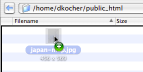
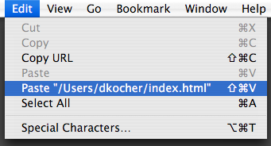

-
Použitím metódy „ťahaj a pusti“.
Pretiahnite súbor z Finderu do okna prehliadača.
Súbory môžete odoslať aj bez predchádzajúceho nadviazania spojenia so serverom - vhodením súboru (súborov) na záložku v lište záložiek.

Poznámka: preťahovanie súborov nie je obmedzené len na Finder, ale funguje napríklad aj s prílohami aplikácieMail a ďalšími aplikáciami podporujúcimi akcie so súbormi.
Rovnako tak môžete pretiahnuť súbory na ikonu aplikácie Cyberduck, čo spôsobí ich odoslanie na server zobrazený v najvrchnejšom okne prehliadača.
-
Použitím kopírovania a vloženia.
Skopírujte súbor vo Finderi príkazom Úpravy → Kopírovať a pre odoslanie ho vložte do okna prehliadača Cyberduck príkazom Úpravy → Vložiť z Finderu.
